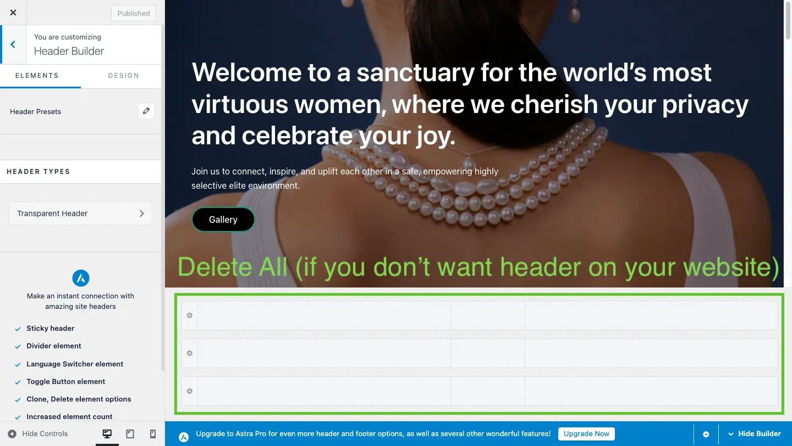
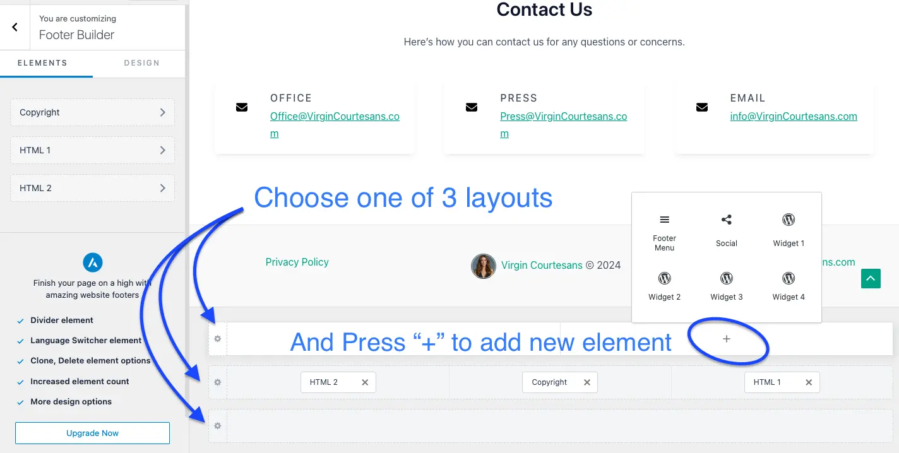
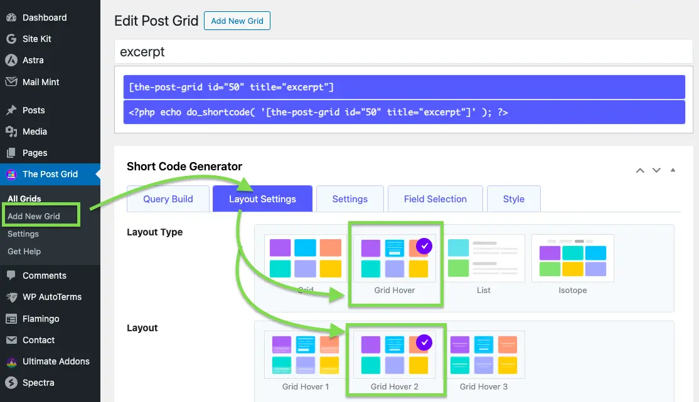
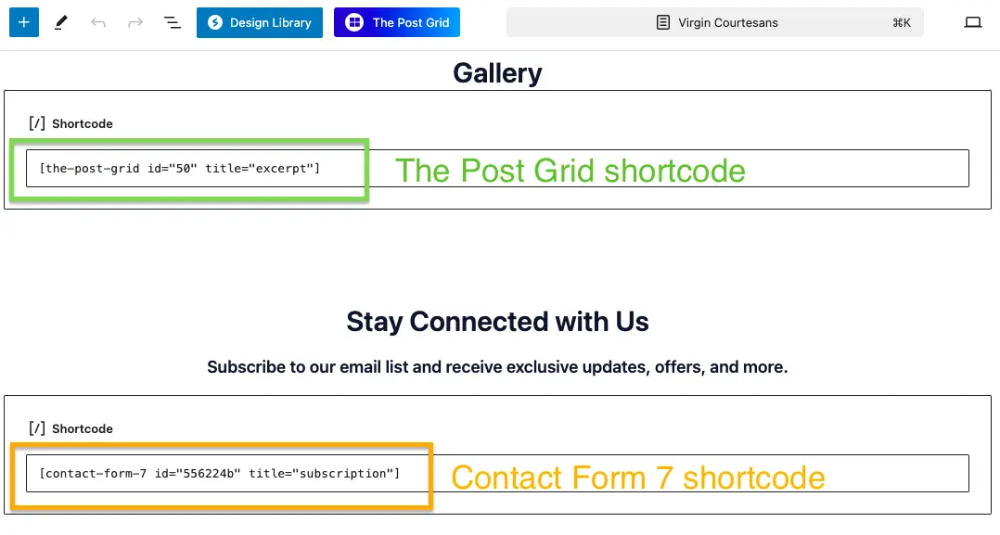
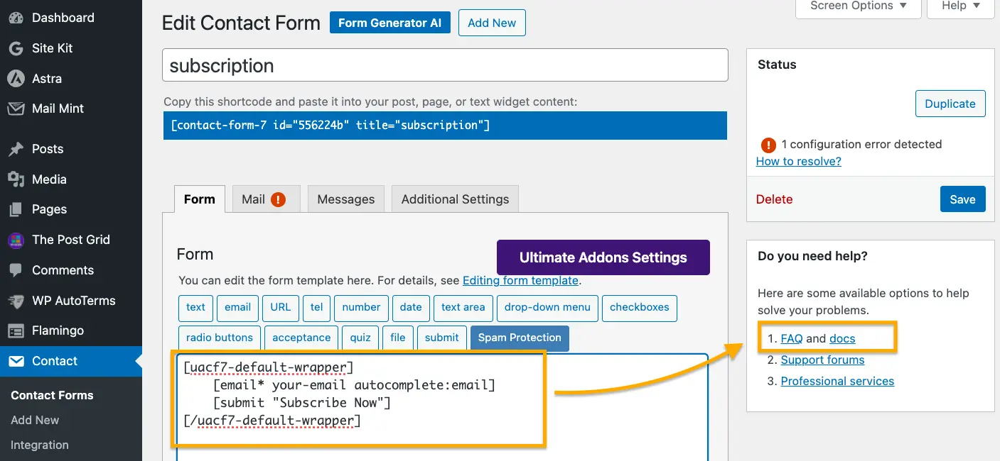
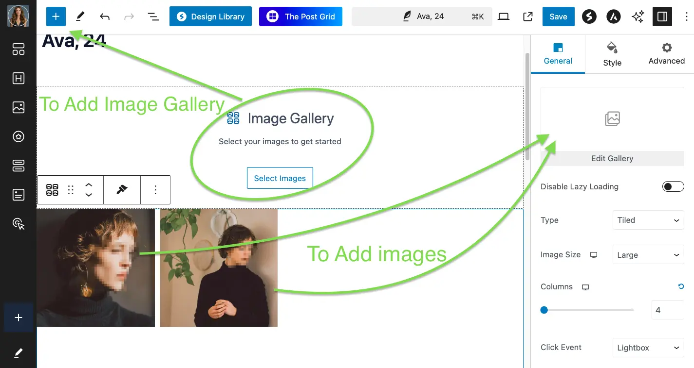
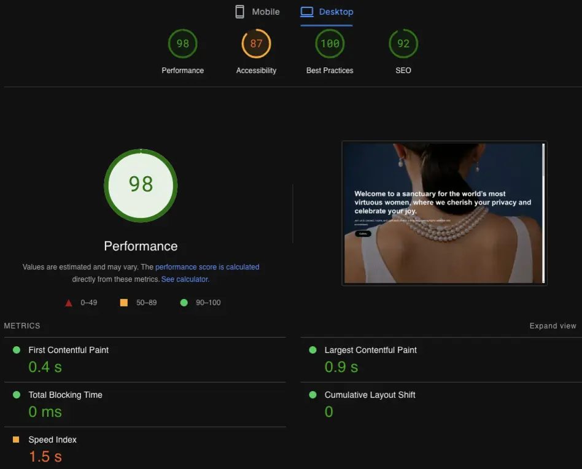

Building Virgin Courtesans: A Comprehensive WordPress Development Guide
Published on August 4, 2024
Virgin Courtesans is a sophisticated WordPress website created for a model agency. This project highlights the importance of a clean, minimalistic design that emphasizes user engagement and visual appeal. In this guide, I'll walk you through the entire process, from selecting the right theme to adding the final touches.
Installing and Customizing the Astra Theme
I chose the Astra theme due to its lightweight nature and extensive customization options. Once the theme was installed, I designed the homepage with a bold banner image, an attention-grabbing headline, a brief introduction, and a compelling call-to-action button.
To remove the default header, navigate to Appearance > Customize > Header Builder and delete all the blocks from the three header rows.
Editing and Personalizing the Footer
The footer can be customized or removed entirely based on your preferences. Go to Appearance > Customize > Footer Builder to either remove all elements or select one of three layout options and add text, links, images, or widgets.
Creating a Dynamic Gallery with The Post Grid Plugin
The client required a dynamic gallery where hovering over images reveals the model’s category, tags, and a brief description. To fulfill this, I utilized the The Post Grid plugin.
To create a new grid, go to The Post Grid > Add New Grid. In the Layout Settings, I selected the ✅ Grid Hover and ✅ Grid Hover 2 options.
Also changed few settings in other tabs, so Layout Preview for our Posts now looks like this:

After adjusting the layout to match the client’s vision, I embedded the gallery into the desired page using the provided shortcode.
Implementing a Customizable Contact Form
To create a user-friendly contact form, I used the Contact Form 7 plugin. Simply go to Contact > Add New and configure the form according to your requirements. If you encounter any issues, the plugin’s comprehensive documentation and FAQ section are helpful resources.
Creating and Duplicating Consistent Posts
For blog posts, I followed a structured format that includes a title, an image gallery, and content sections with headings and paragraphs. To maintain consistency across all posts, I utilized the Duplicate Page and Post plugin to replicate the initial post template.
Testing and Optimizing Site Performance
After building the website, it’s essential to test its performance. I used Google PageSpeed Insights to analyze and optimize the site's speed and overall performance.
Must-Have Plugins for Every WordPress Site + Additional Plugins
To enhance functionality and security, I installed several essential plugins:
- WPvivid: Comprehensive site backups.
- Flamingo: Secure storage of Contact Form 7 submissions.
- 404 to 301: SEO-friendly redirects for 404 errors.
- Google Site Kit: Integrates Google tools like Analytics and Search Console in one place.
Conclusion
Building the Virgin Courtesans website was a fulfilling project that showcased the versatility of WordPress. By combining a highly customizable theme, essential plugins, and thoughtful design, the site not only meets the client’s needs but also offers an excellent user experience.
Football Academy site example

Japalandia work abroad Landing Page